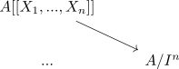

completion of a noetherian ring as noetherian ring
Proposition
Let $A$ be a noetherian ring, $\mathfrak{a}$ an ideal. Then the completion $\widehat{A}$ is also noetherian
Proof
By assumption $\mathfrak{a} = (a_1,...,a_n)$ is a finitely generated ideal.
using power series ring and noetherian ring and quotient ring of a noetherian ring as noetherian ring it suffices to show that there exists a surjection
\begin{align*}
R \twoheadrightarrow \widehat{A}
\end{align*}
from a noetherian ring
E.g.
\begin{align*}
\varphi: A[ [X_1,...,X_n] ] \rightarrow& \widehat{A} \\
(\alpha_i x_i^n) \mapsto& (\alpha_i a_i) \\
\end{align*}
induced by the universal property

suffices
Note that each map
\begin{align*}
A [[ X_1,..., X_n] ] \rightarrow A/I^n
\end{align*}
is welldefined, as only finitely many powers of $X_i$ map to nonzero elements.
surjective
Let
\begin{align*}
(\alpha_n + I^n)
\end{align*}
be an element.
Then we may inductively define
- $\beta_0 \coloneqq a_1$
- $\beta_{n+1} \coloneqq \alpha_n - $, some difference + monomial
TODO